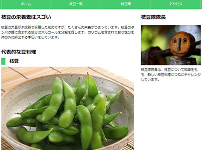

Furniture-store
モバイルファーストでレスポンシブ対応。widthをcalcで3分の1にした3カラムレイアウトで、CSSとJavaScriptでローディングアニメーションを実装。


Thai-Nama
3つのブレイクポイントを設定し_(ｱﾝﾀﾞｰﾊﾞｰ)ファイルを作成。さらに別ファイルの@forwardで呼び出しレスポンシブ対応。
共通の価を変数にすることにより、CSSよりシンプルに記述。

- 
「枝豆隊長」
PCファーストでレスポンシブ対応。
CSSに:rootにメインカラーを登録。

NetSmart
PCファーストでレスポンシブ対応。
CSSのtransformプロパティのscale()で、マウスを置くと3枚の画像3枚が拡大。